Hello World pe FRDM-MCXA153
| Ziua / Sesiunea | Ziua 1 — Setup Workshop |
| Periferic | Toolchain · Build System · Debug |
| Durată | ~3h |
| Hardware | FRDM-MCXA153 + cablu USB Type-C · PC Windows/Linux/macOS |
Pasul zero, livrat asincron înainte de ziua 1 fizică. Participanții primesc un repo GitHub template (ipcei-upb/frdm-mcxa153-template) cu structura CMake pre-configurată. Stefan este disponibil pe Discord pentru troubleshooting. Scopul: toată lumea vine în ziua 1 cu mediul de lucru funcțional.
Board: FRDM-MCXA153 · MCX A153 (Cortex-M33 @ 96 MHz) · SDK MCUXpresso 24.12 · VS Code + CMake
NXP_SDK_ROOT configurat în CMakePresets.jsonmain() în VS Code| Interval | Activitate | Detaliu | Cine |
|---|---|---|---|
Async |
Instalare toolchain | VS Code + extensii C/C++, CMake Tools, Cortex-Debug. ARM GNU Toolchain 13.x. OpenOCD pentru CMSIS-DAP. | student |
Async |
Clone repo template | git clone https://github.com/ipcei-upb/frdm-mcxa153-templateStructura: src/, boards/, CMakeLists.txt, CMakePresets.json |
student |
Async |
Config SDK | Descărcare SDK_24.12_FRDM-MCXA153 de pe mcuxpresso.nxp.com. Setare NXP_SDK_ROOT în CMakePresets.json. |
student |
Async |
Build + flash | cmake --preset frdm-mcxa153-debug → cmake --build build/ → drag-drop .bin pe MCU-Link drive. |
student |
Async |
Debug session | F5 în VS Code → breakpoint pe GPIO_PinWrite() → step-over → LED schimbă starea. |
student |
Regulă: Copiați prompt-ul complet — contextul hardware este obligatoriu. AI-ul va genera cod greșit (pentru alte familii NXP sau Arduino) fără aceste informații.
Context: FRDM-MCXA153, MCX A153 Cortex-M33, SDK MCUXpresso 24.12.
Toolchain: ARM GNU Toolchain 13.x, CMake 3.27+, debugger MCU-Link OB (CMSIS-DAP).
Problema: CMakePresets.json nu găsește NXP_SDK_ROOT pe Windows (PATH cu spații).
Cum configurez variabila de mediu corect și cum evit path-uri cu spații în CMake?
Context hardware: FRDM-MCXA153, SDK MCUXpresso 24.12, VS Code + CMake.
RGB LED D3: R=PIO1_7, G=PIO3_12, B=PIO3_13 — ANOD COMUN → LOW=aprins.
Scrie codul complet pentru blink LED verde la 500ms.
Include:
CLOCK_EnableClock(kCLOCK_Port3)
PORT_SetPinMux(PORT3, 12u, kPORT_MuxAsGpio)
GPIO_PinInit(), GPIO_PinWrite(), SDK_DelayAtLeastUs()
Explică de ce GPIO LOW aprinde LED-ul (anod comun).
Ce GenAI nu știe fără context explicit — verificați înainte de upload pe placă.
C:/NXP/SDK)GPIO LOW = LED APRINS (opus intuiției Arduino standard)Căutați MCUXpresso for VS Code în Extensions Marketplace și instalați-o. La prima deschidere apare pagina Discover NXP MCUXpresso for VS Code cu secțiunea Check Tool Dependencies.
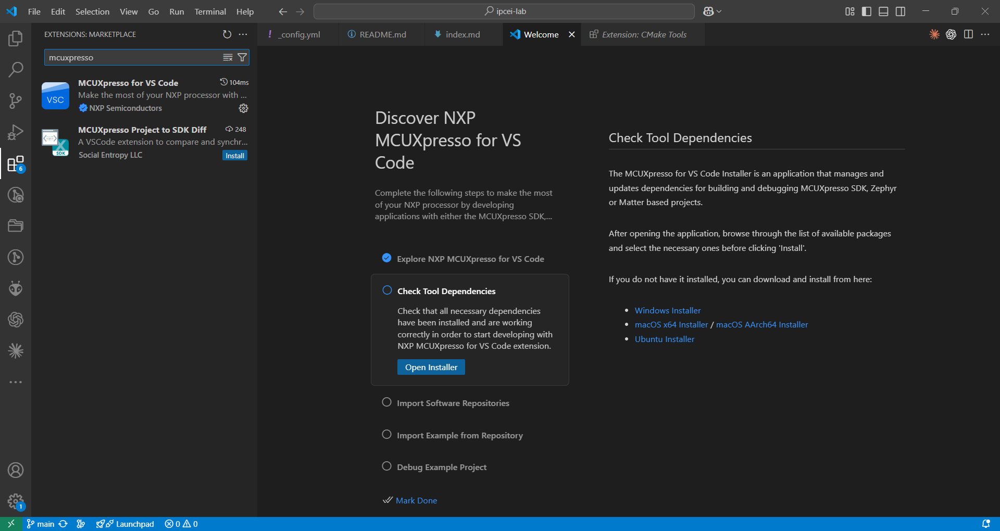
Apăsați Open Installer pentru a lansa MCUXpresso Installer.
Selectați și instalați cel puțin:
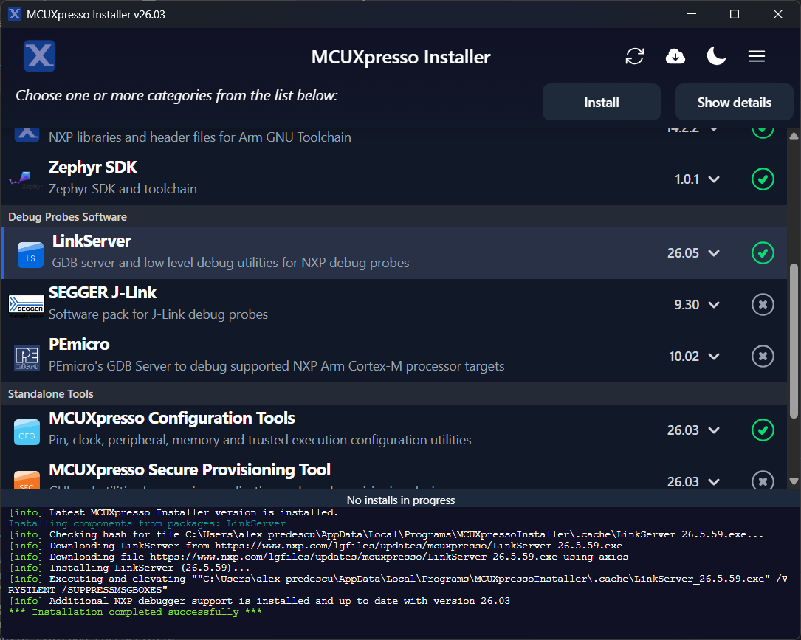
Instalarea durează câteva minute. Urmăriți log-ul din partea de jos a ferestrei și așteptați
*** Installation completed successfully ***.
În panoul MCUXPRESSO FOR VS CODE → QUICKSTART PANEL, apăsați Import Repository. Configurați:
https://github.com/nxp-mcuxpresso/mcuxsdk-manifests)mcuxsdkc:\WORKSPACE\proiecte\ipcei-lab\src\sdks)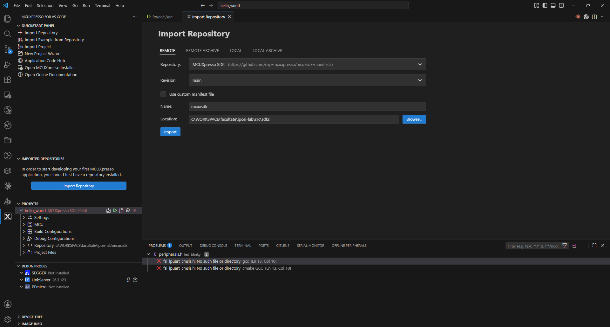
Atenție: Importul SDK durează mult (descarcă ~2 GB via west/git). Folosiți acest timp pentru a citi specificațiile plăcii FRDM-MCXA153.
După ce SDK-ul este importat, apăsați Import Example from Repository. Selectați:
demo_apps/hello_world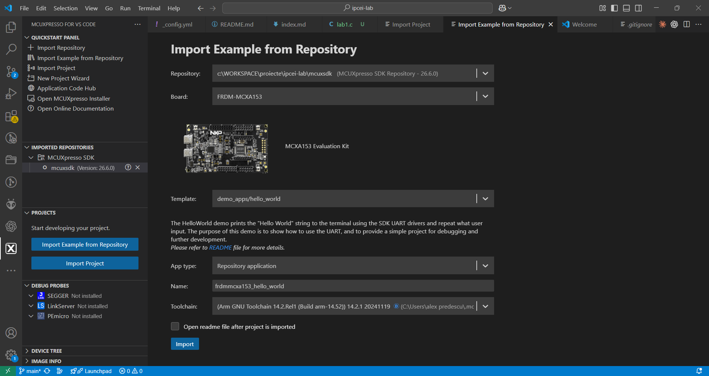
Alternativ, puteți crea un proiect nou de la zero cu New Project Wizard:
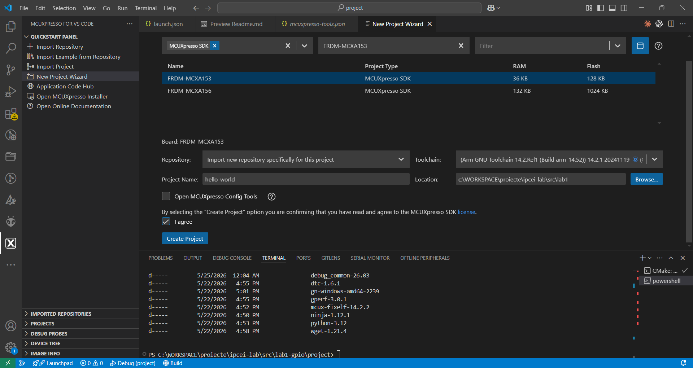
Apăsați Build din panoul proiectului (sau Ctrl+Shift+B). Prima compilare rulează CMake și generează fișierele de build.
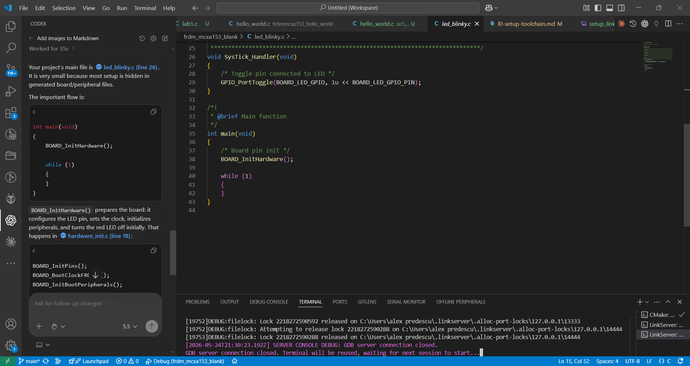
Dacă apar erori de build, folosiți asistentul AI integrat în VS Code pentru diagnoză și corectare.
Eroare cale SDK în CMakePresets.json:
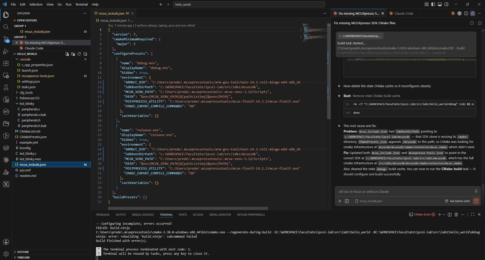
Eroare include CMSIS lipsă:
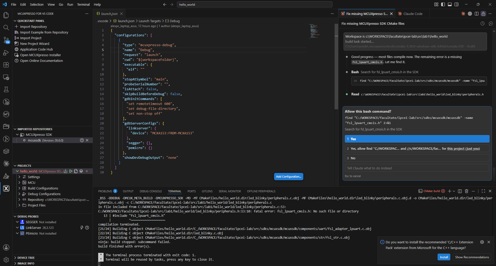
CMakeLists.txt după corectare:
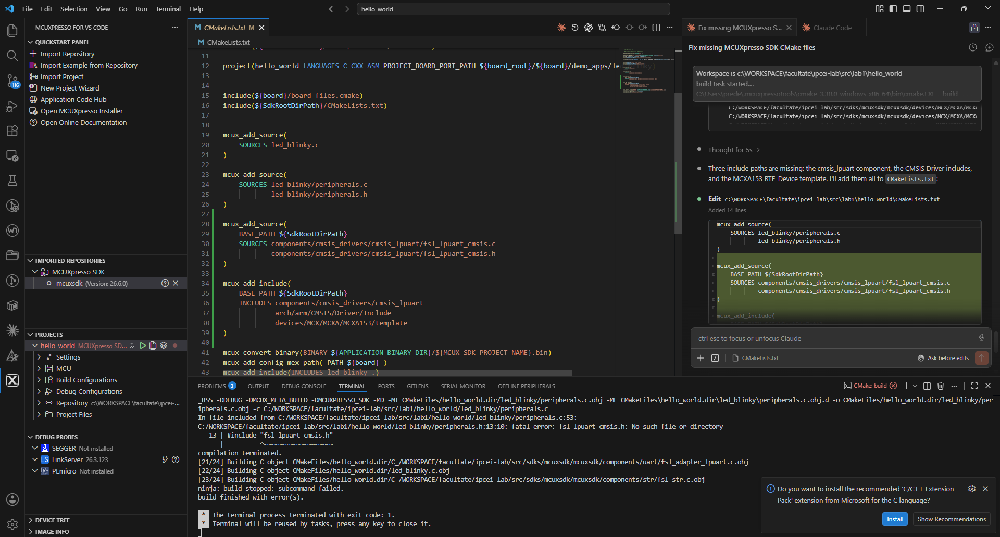
Configurația perifericelor (pini, clock, periferice) este stocată în fișierul .mex. Poate fi deschis în două moduri:
Din Windows Explorer — fișierul led_blinky.mex are tipul MCUXpresso Config Tools Settings File:
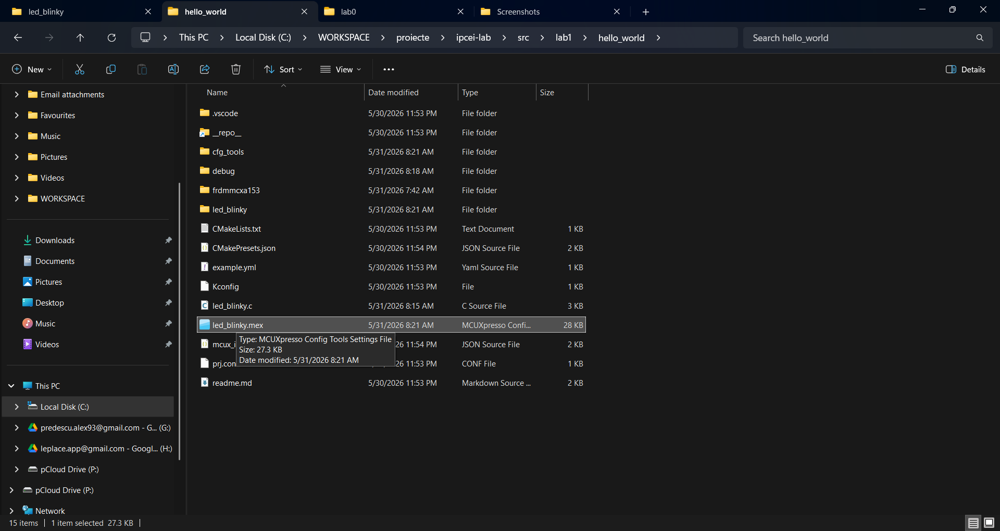
Din VS Code — click dreapta pe orice fișier din proiect → Open with MCUXpresso Config Tools:
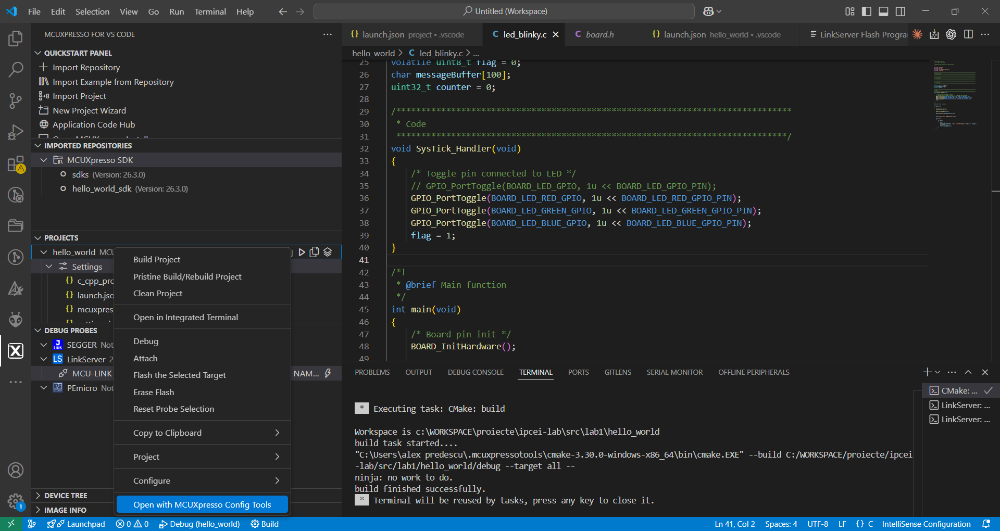
Conectați placa FRDM-MCXA153 prin USB Type-C (portul J6 — MCU-Link) și apăsați F5 sau butonul Run and Debug.
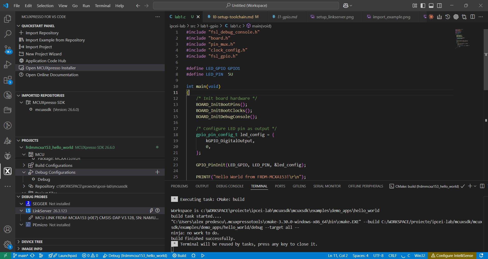
Setați un breakpoint în cod și observați execuția pas cu pas:
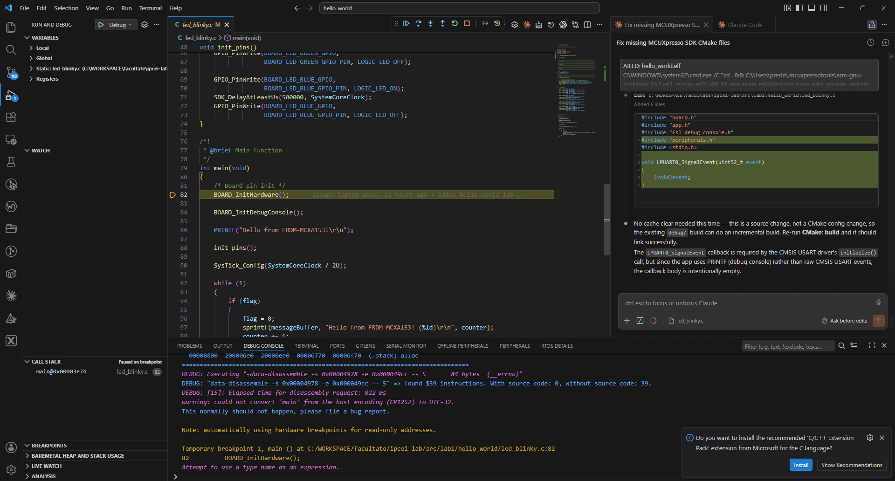
Eroare frecventă
No probe detected: apare dacă LinkServer nu este instalat sau placa nu e conectată la portul corect. Verificați că LED-ul verde de pe MCU-Link este aprins.
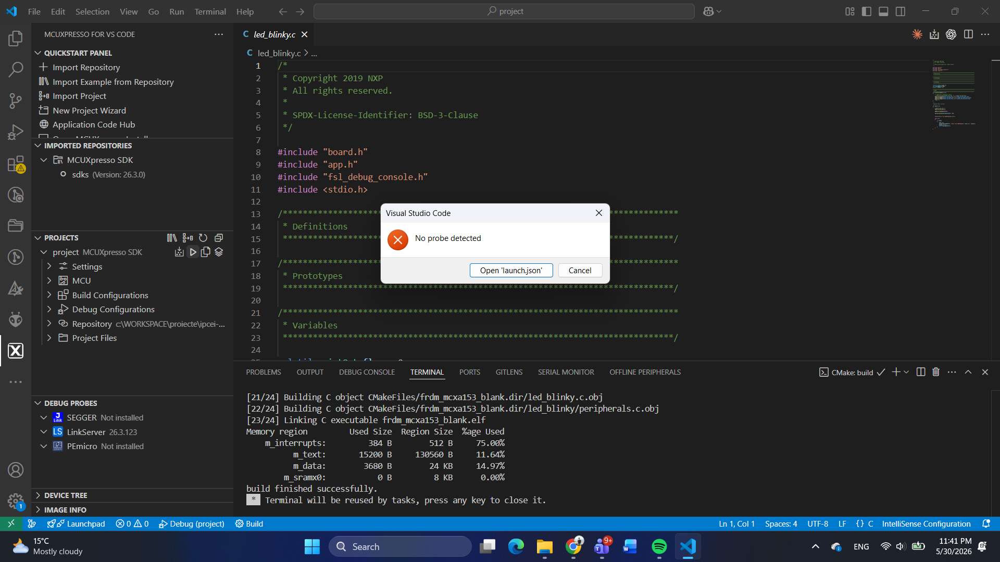
Folosiți Copilot sau Claude din VS Code pentru a înțelege codul SDK generat automat:
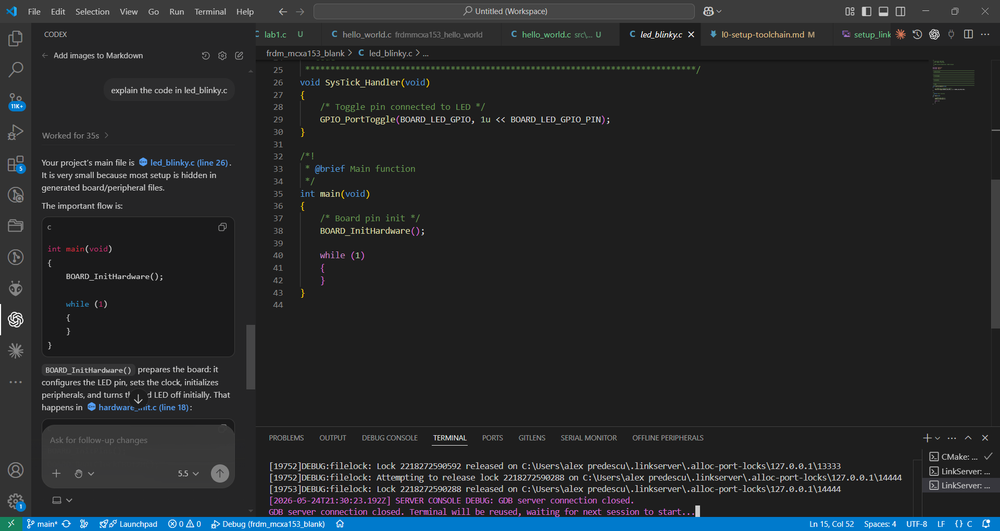
Repo GitHub personal cu blink funcțional + screenshot debug session cu breakpoint activ